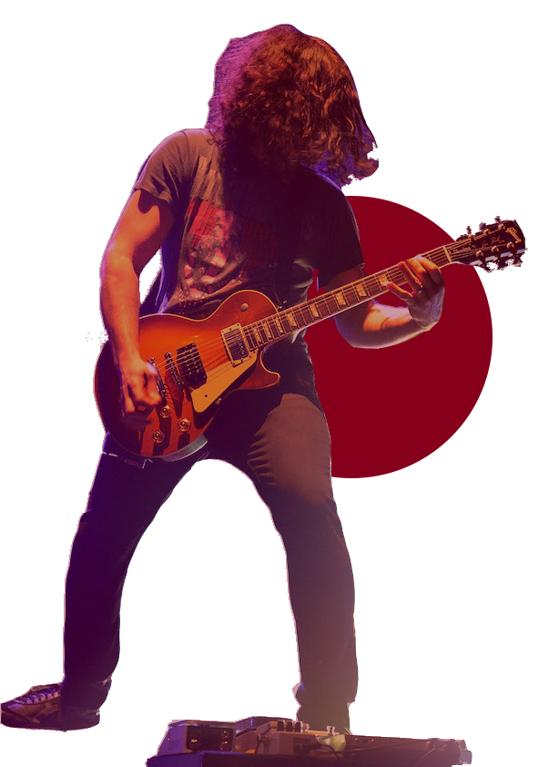
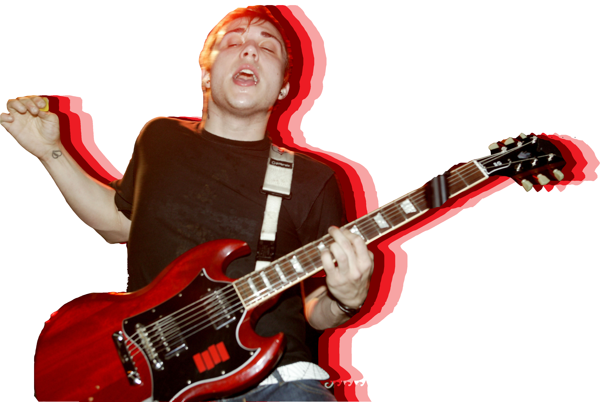
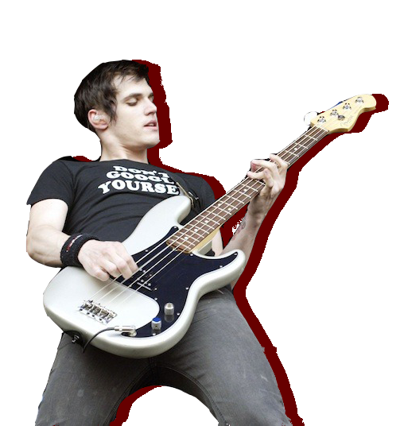

Gerard Way
Gerard Arthur Way (born April 9, 1977) is an American singer, songwriter, musician, and comic
book writer. He is the lead vocalist and co-founder of My Chemical Romance from its
formation in September 2001 until its split in March 2013. His debut solo album Hesitant Alien was
released on September 30, 2014. On October 28, 2018, Way released his first major solo single in over two years,
titled "Baby You’re a Haunted House".
Way is also the co-founder of DC Comics' Young Animal imprint.
He wrote the comic mini-series The True Lives of the Fabulous Killjoys and the Eisner Award-winning
comic book series The Umbrella Academy.

Way was working as an intern for Cartoon Network in New York City during the September 11, 2001 attacks.
Seeing the effects of the attacks first-hand prompted Way to change his views on life in the following weeks.
He told Spin magazine, "I literally said to myself, 'Fuck art. I've gotta get out of the basement. I've gotta see the world.
I've gotta make a difference.'" To help deal with the emotional effects the attacks had on him, Way wrote the lyrics to the song
"Skylines and Turnstiles", which became the first song by My Chemical Romance.
Ray Toro
Raymond Manuel Toro-Ortiz (born July 15, 1977) is an American musician. He is lead guitarist
and backing vocalist of My Chemical Romance. On January 1, 2015,
he released a new song, titled "For the Lost and Brave", on his website, mentioning Leelah Alcorn,
a transgender teen who committed suicide, in the blog post.On November 18, 2016, Toro released his
debut album, Remember the Laughter, after recording it primarily at his home since 2013.

Rodney's frontman Shawn Dillon is credited with introducing Toro to Gerard Way in the late 1990s.
Toro agreed to work with him and Pelissier in practice sessions, which were primarily held in Pelissier's attic.
After Gerard's younger brother Mikey joined the trio as bass player My Chemical Romance was formed.
Especially since My Chemical Romance's third album The Black Parade, Toro has been compared to Queen guitarist Brian May.
He has long cited May as a key influence on his guitar style. Toro was the leading force behind My Chemical Romance's
#SINGItForJapan project, which was dedicated to supporting those affected by the 2011 Tōhoku earthquake and tsunami
in Japan. He arranged much of the instrumentation of the band's original track "Sing" to create a sound that
emulated traditional Japanese music.
Frank Iero
Frank Anthony Iero, Jr. (born October 31, 1981) is an American musician. He is the rhythm guitarist and
backup vocalist of My Chemical Romance and the post-hardcore band Leathermouth. He has a solo punk rock
project titled Frank Iero and the Future Violents (formerly frnkiero andthe cellabration and Frank Iero and the Patience).
He released his debut solo album titled Stomachaches on August 26, 2014.
Frank started playing in local bands on the New Jersey punk scene when aged 11. Before joining My Chemical Romance
he served as frontman for the punk band Pencey Prep. The band released an album, Heartbreak in Stereo,
on the independent Eyeball Records before disbanding.

Whilst playing with Pencey Prep, he became friends with
Gerard Way and the other My Chemical Romance members, became a fan of their original demo and helped them get
their first shows. After his band broke up, Frank played in several bands, including I Am A Graveyard, Hybrid,
Sector 12, and American Nightmare before being offered the slot of rhythm guitar in My Chemical Romance. Iero
joined My Chemical Romance in 2002 and was featured on two tracks, "Honey, This Mirror Isn't Big Enough
for the Two of Us" and "Early Sunsets Over Monroeville", on their debut album I Brought You My Bullets, You Brought Me Your Love.
Mikey Way
Michael James Way (born September 10, 1980) is an American musician and actor. He is best known as the bassist of My Chemical Romance.
He is also the multi-instrumentalist and backing vocalist of rock duo Electric Century. They announced their debut album For the Night
to Control on February 24, 2016, and was released on March 9, exclusively with that week's edition of Kerrang! Magazine.
Mikey co-wrote Collapser with Shaun Simon due to begin release July 2019 on DC Comics.

Way joined American rock band My Chemical Romance in 2001 as their bassist and suggested the band's name after
he read the book Ecstasy: Three Tales of Chemical Romance. When Way joined the band, he had to improve
his bass skills in less than a week.
In November 2015, Way was featured in Good Charlotte's music video for their first single since their hiatus, "Makeshift Love".
He also contributed to Andy Black's debut solo album The Shadow Side, a pseudonym project from Black Veil Brides frontman
Andy Biersack. Way recorded bass for American pop punk band Waterparks on their Cluster EP, and later joined them on tour
with Good Charlotte, including performances at Reading and Leeds festivals.